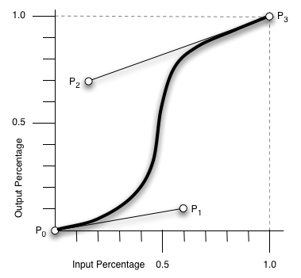

Raconté par Vincent Jugé
sur la base d'un cours créé par Rémi Forax
Appeler la méthode element.classList.toggle(class) va ajouter (ou enlever) la classe class à un element HTML.
La propriété transform permet de spécifier une tranformation (translation, rotation, etc).
La propriété transition permet de demander une animation qui va effectuer une interpolation entre les deux positions.
En plus des translations, on peut faire des rotations (rotate) et des agrandissements (scale).
Et on peut faire des trucs cool en 3D !
transition regroupe ces propriétés, dans cet ordre.
L'opacité peut aussi être animée.
On sépare par des ',' si on a plusieurs attributs.
On peut choisir la fonction d'interpolation
linear, ease-in,
ease-out, ease-in-out.
Cela permet de rendre le mouvement plus naturel.
On peut définir précisément la courbe de Bézier à utiliser.

@keyframes permet de définir des keyframes avec un nom.
animation permet d'animer les keyframes.
On peut bien sûr utiliser les transformations
L'animation se fait en regardant ce qui change d'une keyframe à l'autre.
animation regroupe ces propriétés, dans cet ordre.
window.requestAnimationFrame prend une fonction en paramètre qui est appelé avec le temps courant.
box.style permet
d'obtenir le style d'un objet DOM.
On sauvegarde timestamp dans start pour travailler par rapport à un temps initial.
Avec la possibilité d'aller à l'envers.